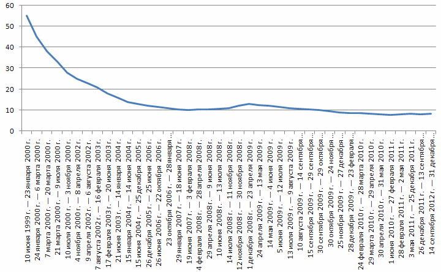

Регистрация в телеграм-боте: @Mavrodi_robot

Как во всём мире борются с кризисом? Снижают ставку рефинансирования (в США, к примеру, она сейчас 0.25%, в Японии 0.1%). Дают банкам деньги. Как можно больше денег! Нате! Берите! Практически даром! Кредитуйте предприятия, реальное производство!

А как борются у нас? ПОВЫШАЮТ эту ставку!!! Чтобы банки не могли брать деньги под такой чудовищный процент. Хрен вам, а не деньги! Рубль должен стоять! (Ставка рефинансирования в России сейчас 13%! Больше таких ставок нет в мире НИГДЕ!)
Итог? Читайте, к примеру, здесь. Дожили! До карточек продовольственных докатились! В 21-м веке. Встали с колен. И все за. Все в восторге. Как обычно последнее время.
При этом ровно половина наших сограждан считает, что малообеспеченные граждане будут обеспечены продуктами первой необходимости, а если бы им просто дали больше денег, то они скорее потратились бы не на еду, а на спиртное и табак.
Это кто бы потратил на спиртное и табак? Бабушки-пенсионерки? А те, кто это пишут, кто с такими вот инициативами выступает они более высокоморальные, да? Из другого теста? Белые? Им можно деньги выдавать? Они не потратят? Какие зарплаты у этих уродов-депутатов?! У министров и прочей братии? Вообще, есть предел цинизму человеческому?
Сергей Мавроди, 21 декабря 2010 год
Регистрация в телеграм-боте: @Mavrodi_robot